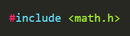
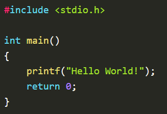

BASIC STRUCTURE & SYNTAX
- Pre-processor commands
- Functions
- Variables
- Statements
- Expressions
- Comments
Programming in C involves following a basic structure throughout. Here’s what it can be broken down to.
Pre-processor commands
- Pre-processor commands are commands which tell our program that before its execution, it must include the file name mentioned in it because we are using some of the commands or codes from this file.
- They add functionalities to a program. One example could be, 
- We include math.h to be able to use some special functions like power and absolute. #include
is how we include them into our programs. Detailed explanations of everything else in the structure will follow in the later part of the tutorial.
Syntax
- Here, the first line is a pre-processor command including a header file stdio.h.
- C ignores empty lines and spaces.
- There is a main() function then, which should always be there.
- It has a print statement and then a return statement.
- Every statement in C must end with a semi-colon.
- Make sure the return statement and the return_type of the function are the same.
- Keywords
- Identifiers
- Constants
- String Literal
- Symbols
An example below shows how a basic C program is written and how the structure we learned is followed.

A C program is made up of different tokens combined. These tokens include:
KEYWORDS
Keywords are reserved words that can not be used elsewhere in the program for naming a variable or a function. They have a specific function or task and they are solely used for that. Their functionalities are pre-defined.
such example of a keyword could be return which is used to build return statements for functions. Other examples are auto, if, default, etc.
IDENTIFIERS
Identifiers are names given to variables or functions to differentiate them from one another. Their definitions are solely based on our choice but there are a few rules that we have to follow while naming identifiers. One such rule says that the name can not contain special symbols such as @, -, *, <, etc.
CONSTANTS
Constants are very similar to a variable and they can also be of any data type. The only difference between a constant and a variable is that a constant’s value never changes. We will see constants in more detail in the upcoming tutorials.
STRING LITERAL
String literals or string constants are a sequence of characters enclosed in double quotation marks. For example, “This is a string literal!” is a string literal. C method printf() utilizes the same to format the output.
SYMBOLS
Symbols are special characters reserved to perform certain actions. Using them lets the compiler know what specific tasks should be performed on the given data. Several examples of symbols are arithmetical operators such as +, *, or bitwise operators such as ^, &.